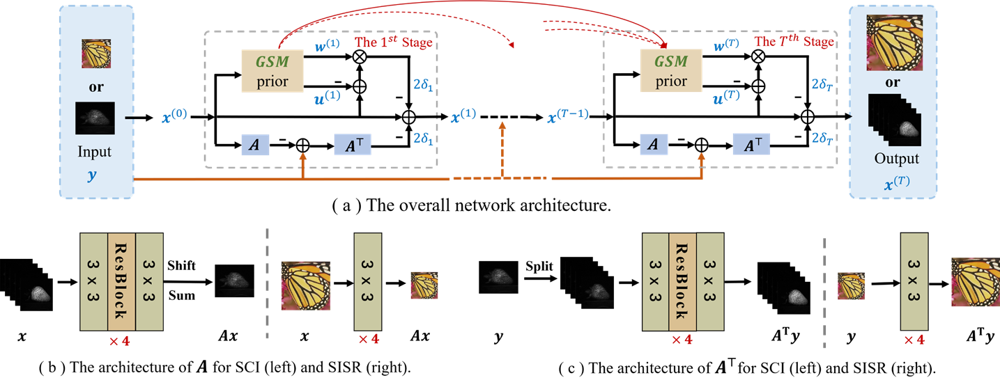
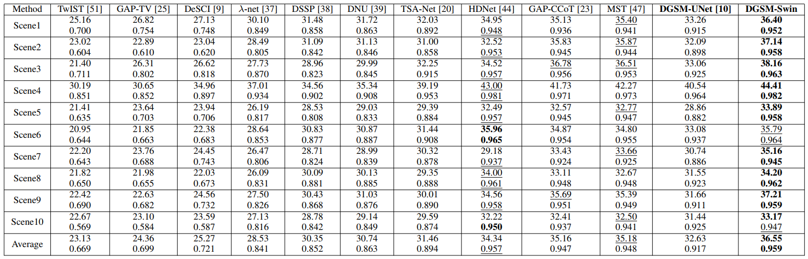
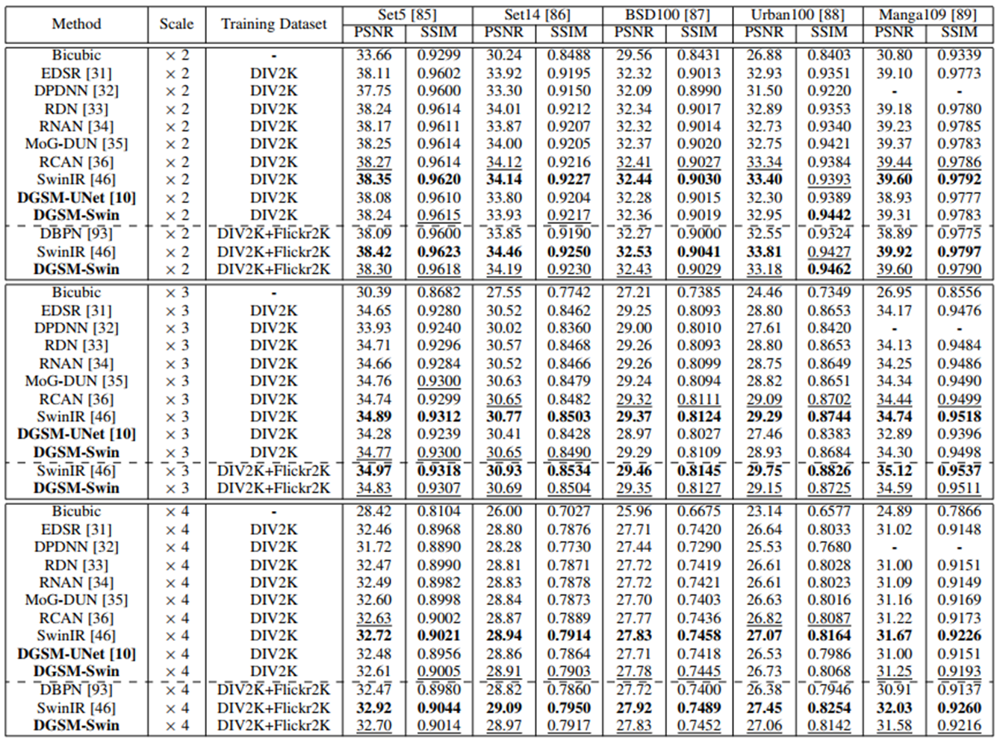
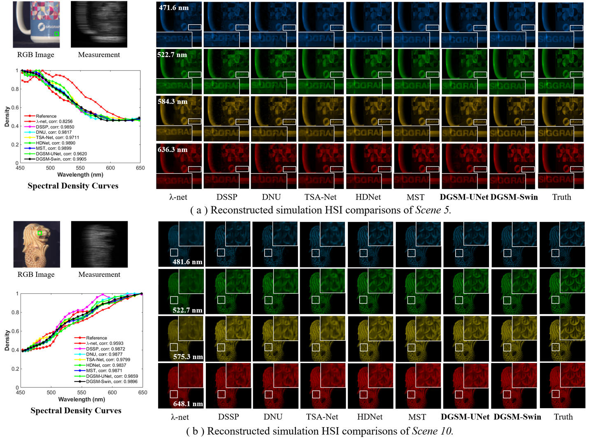
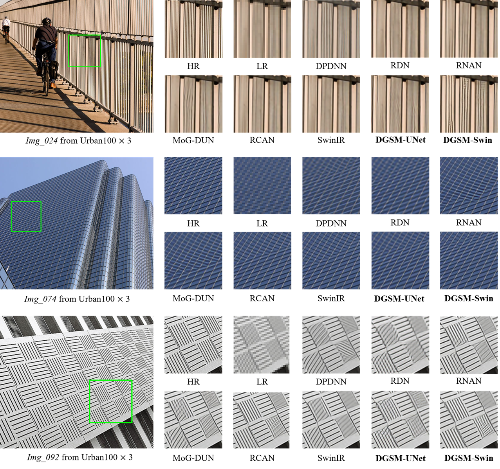
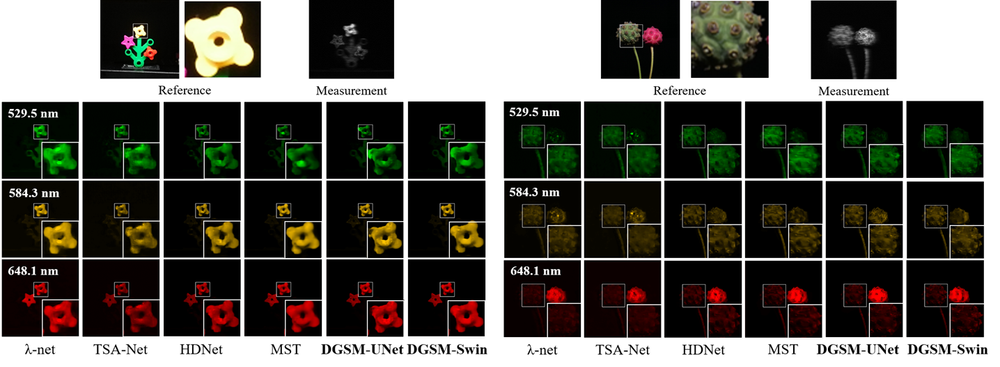
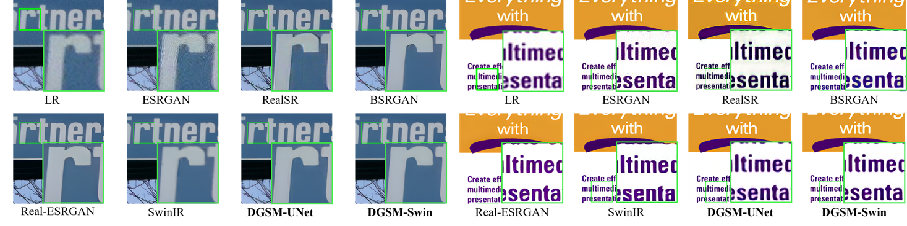

Deep Gaussian Scale Mixture Prior for Image
Reconstruction
Tao Huang1 Xin Yuan2 Weisheng Dong1* Jinjian Wu1 Guangming Shi1
1School of Artificial Intelligence, Xidian University 2Westlake University

Figure 1. Architecture of the proposed network DGSM for spectral compressive imaging (SCI) and single image super-resolution (SISR). The
architectures of (a) the overall network, (b) the measurement matrix for SCI (left) and SISR (right), (c) the transposed version of the measurement
matrix for SCI (left) and SISR (right).
Abstract
Image reconstruction from partial observations has attracted increasing attention. Conventional image reconstruction methods with hand-crafted priors often fail to recover fine image details due to the poor representation capability of the hand-crafted priors. Deep learning methods attack this problem by directly learning mapping functions between the observations and the targeted images can achieve much better results. However, most powerful deep networks lack transparency and are nontrivial to design heuristically. This paper proposes a novel image reconstruction method based on the Maximum a Posterior (MAP) estimation framework using learned Gaussian Scale Mixture (GSM) prior. Unlike existing unfolding methods that only estimate the image means (i.e., the denoising prior) but neglected the variances, we propose characterizing images by the GSM models with learned means and variances through a deep network. Furthermore, to learn the long-range dependencies of images, we develop an enhanced variant based on the Swin Transformer for learning GSM models. All parameters of the MAP estimator and the deep network are jointly optimized through end-to-end training. Extensive simulation and real data experimental results on spectral compressive imaging and image super-resolution demonstrate that the proposed method outperforms existing state-of-the-art methods.
TPAMI 2023
Citation
T. Huang, X. Yuan, W. Dong, J. Wu and G. Shi, "Deep Gaussian Scale Mixture Prior for Image Reconstruction," in IEEE Transactions on Pattern Analysis and Machine Intelligence, doi: 10.1109/TPAMI.2023.3265103.
Bibtex
@ARTICLE{10094019,
author={Huang, Tao and Yuan, Xin and Dong, Weisheng and Wu, Jinjian and Shi, Guangming},
journal={IEEE Transactions on Pattern Analysis and Machine Intelligence},
title={Deep Gaussian Scale Mixture Prior for Image Reconstruction},
year={2023},
volume={},
number={},
pages={1-17},
doi={10.1109/TPAMI.2023.3265103}}
Download
 |
Results
Comparison with State-of-the-art Reconstruction Methods:
Table 1. The PSNR in dB (top entry in each cell) and SSIM (bottom entry in each cell) results of the test methods on 10 scenes. The best performance is
shown in bold
and the second best performance is shown in underline. 
Table 2. Average PSNR and SSIM results for bicubic downsampling degradation on five benchmark datasets. The best performance is shown in bold and
the second best
performance is shown in underline. 

Figure 2. Reconstructed images of Scene 5 (a) and Scene 10 (b) with 4 out of 28 spectral channels by the eight deep learning-based methods. The
spectral curves (bottom-left) correspond to the selected green box of the RGB image. Zoom in for better view

Figure 3. Visual quality comparisons of different SISR methods for three sample images in the Urban100 dataset (bicubic-downsampling, ℅3)

Figure 4. Reconstructed images of two real scenes (Scene 1 and Scene 4) with 3 out of 28 spectral channels by the competing methods. Zoom in
for better view.

Figure 5. Visual comparison of real-world image SR (℅4) methods on real-world images. Zoom in for better view.
References
[1] J. M. Bioucas-Dias and M. A. Figueiredo, ※A new twist: Two-step iterative shrinkage/thresholding algorithms for image restoration,§ IEEE Transactions on Image processing, vol. 16, no. 12, pp. 2992每3004, 2007.
[2] X. Yuan, ※Generalized alternating projection based total variation minimization for compressive sensing,§ in 2016 IEEE International Conference on Image Processing (ICIP). IEEE, 2016, pp. 2539每2543.
[3] Y. Liu, X. Yuan, J. Suo, D. J. Brady, and Q. Dai, ※Rank minimization for snapshot compressive imaging,§ IEEE Transactions on Pattern Analysis and Machine Intelligence, vol. 41, no. 12, pp. 2990每3006, 2018.
[4] X. Miao, X. Yuan, Y. Pu, and V. Athitsos, ※lambda-net: Reconstruct hyperspectral images from a snapshot measurement,§ in 2019 IEEE/CVF International Conference on Computer Vision (ICCV). IEEE, 2019, pp. 4058每4068.
[5] L. Wang, C. Sun, Y. Fu, M. H. Kim, and H. Huang, ※Hyperspectral image reconstruction using a deep spatial-spectral prior,§ in Proceedings of the IEEE Conference on Computer Vision and Pattern Recognition, 2019, pp. 8032每8041.
[6] L. Wang, C. Sun, M. Zhang, Y. Fu, and H. Huang, ※Dnu: Deep nonlocal unrolling for computational spectral imaging,§ in Proceedings of the IEEE/CVF Conference on Computer Vision and Pattern Recognition, 2020, pp. 1661每1671.
[7] Z. Meng, J. Ma, and X. Yuan, ※End-to-end low cost compressive spectral imaging with spatial-spectral self-attention,§ in European Conference on Computer Vision. Springer, 2020, pp. 187每204.
[8] X. Hu, Y. Cai, J. Lin, H. Wang, X. Yuan, Y. Zhang, R. Timofte, and L. Van Gool, ※Hdnet: High-resolution dual-domain learning for spectral compressive imaging,§ in Proceedings of the IEEE/CVF Conference on Computer Vision and Pattern Recognition, 2022, pp. 17 542每17 551.
[9] L. Wang, Z. Wu, Y. Zhong, and X. Yuan, ※Snapshot spectral compressive imaging reconstruction using convolution and contextual transformer,§ Photon. Res., vol. 10, no. 8, pp. 1848每1858, Aug 2022.
[10] Y. Cai, J. Lin, X. Hu, H. Wang, X. Yuan, Y. Zhang, R. Timofte, and L. Van Gool, ※Mask-guided spectral-wise transformer for efficient hyperspectral image reconstruction,§ in Proceedings of the IEEE/CVF Conference on Computer Vision and Pattern Recognition, 2022, pp. 17 502每17 511.
[11] T. Huang, W. Dong, X. Yuan, J. Wu, and G. Shi, ※Deep gaussian scale mixture prior for spectral compressive imaging,§ in Proceedings of the IEEE/CVF Conference on Computer Vision and Pattern Recognition, 2021, pp. 16 216每16 225.
[12] B. Lim, S. Son, H. Kim, S. Nah, and K. Mu Lee, ※Enhanced deep residual networks for single image super-resolution,§ in Proceedings of the IEEE conference on computer vision and pattern recognition workshops, 2017, pp. 136每144.
[13] W. Dong, P. Wang, W. Yin, G. Shi, F. Wu, and X. Lu, ※Denoising prior driven deep neural network for image restoration,§ IEEE Transactions on Pattern Analysis and Machine Intelligence, vol. 41, no. 10, pp. 2305每2318, 2018.
[14] Y. Zhang, Y. Tian, Y. Kong, B. Zhong, and Y. Fu, ※Residual dense network for image super-resolution,§ in Proceedings of the IEEE conference on computer vision and pattern recognition, 2018, pp. 2472每2481.
[15] Y. Zhang, K. Li, K. Li, B. Zhong, and Y. Fu, ※Residual non-local attention networks for image restoration,§ in ICLR, 2019.
[16] Q. Ning, W. Dong, G. Shi, L. Li, and X. Li, ※Accurate and lightweight image super-resolution with model-guided deep unfolding network,§ IEEE Journal of Selected Topics in Signal Processing, vol. 15, no. 2, pp. 240每252, 2020.
[17] Y. Zhang, K. Li, K. Li, L. Wang, B. Zhong, and Y. Fu, ※Image superresolution using very deep residual channel attention networks,§ in Proceedings of the European conference on computer vision (ECCV), 2018, pp. 286每301.
[18] J. Liang, J. Cao, G. Sun, K. Zhang, L. Van Gool, and R. Timofte, ※Swinir: Image restoration using swin transformer,§ in IEEE International Conference on Computer Vision Workshops, 2021, pp. 1833每1844.
Contact
Tao Huang, Email: thuang_666@stu.xidian.edu.cn
Xin Yuan, Email: xyuan@westlake.edu.cn
Weisheng Dong, Email: wsdong@mail.xidian.edu.cn
Jinjian Wu, Email: jinjian.wu@mail.xidian.edu.cn
Guangming Shi, Email: gmshi@xidian.edu.cn